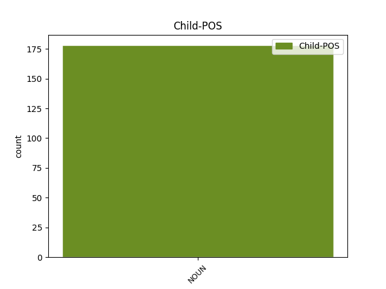

Distribution of features within this leaf

Agreement Rules sorted by frequency.
- When the dependent token is the subject(subj) of the head token, and the head token is VERB and the dependent token is NOUN.
1 И _ _ _ _ 0 _ _ _
2 тут _ _ _ _ 0 _ _ _
3 на _ _ _ _ 0 _ _ _
4 нас _ _ _ _ 0 _ _ _
5 накинулась накинуться VERB _ Aspect=Perf|Gender=Fem|Mood=Ind|Number=Sing|Tense=Past|VerbForm=Fin|Voice=Act 0 _ _ _
6 девушка девушка NOUN _ Animacy=Anim|Case=Nom|Gender=Fem|Number=Sing 5 subj _ SpaceAfter=No
7 . _ _ _ _ 0 _ _ _
1 Но _ _ _ _ 0 _ _ _
2 и _ _ _ _ 0 _ _ _
3 в _ _ _ _ 0 _ _ _
4 трудах _ _ _ _ 0 _ _ _
5 своих _ _ _ _ 0 _ _ _
6 нередко _ _ _ _ 0 _ _ _
7 , _ _ _ _ 0 _ _ _
8 может _ _ _ _ 0 _ _ _
9 статься _ _ _ _ 0 _ _ _
10 , _ _ _ _ 0 _ _ _
11 Приходит _ _ _ _ 0 _ _ _
12 им _ _ _ _ 0 _ _ _
13 на _ _ _ _ 0 _ _ _
14 мысль _ _ _ _ 0 _ _ _
15 , _ _ _ _ 0 _ _ _
16 что _ _ _ _ 0 _ _ _
17 друг друг NOUN _ Animacy=Anim|Case=Nom|Gender=Masc|Number=Sing 20 subj _ _
18 их _ _ _ _ 0 _ _ _
19 старый _ _ _ _ 0 _ _ _
20 жив живой ADJ _ Degree=Pos|Gender=Masc|Number=Sing|Variant=Short 0 _ _ _
21 . _ _ _ _ 0 _ _ _
1 Более _ _ _ _ 0 _ _ _
2 того _ _ _ _ 0 _ _ _
3 - _ _ _ _ 0 _ _ _
4 продолжение продолжение NOUN _ Animacy=Inan|Case=Nom|Gender=Neut|Number=Sing 6 subj _ _
5 тимбилдинга _ _ _ _ 0 _ _ _
6 было быть AUX _ Aspect=Imp|Gender=Neut|Mood=Ind|Number=Sing|Tense=Past|VerbForm=Fin|Voice=Act 0 _ _ _
7 в _ _ _ _ 0 _ _ _
8 караоке _ _ _ _ 0 _ _ _
9 - _ _ _ _ 0 _ _ _
10 бара _ _ _ _ 0 _ _ _
11 . _ _ _ _ 0 _ _ _
1 такой такой DET ADJ Case=Nom|Gender=Masc|Number=Sing 0 _ _ _
2 овин овин NOUN NOUN Animacy=Inan|Case=Nom|Gender=Masc|Number=Sing 1 subj _ _
3 могильной _ _ _ _ 0 _ _ _
4 трубкою _ _ _ _ 0 _ _ _
5 чернея _ _ _ _ 0 _ _ _
6 твоя _ _ _ _ 0 _ _ _
7 рука _ _ _ _ 0 _ _ _
8 угря _ _ _ _ 0 _ _ _
9 чернее _ _ _ _ 0 _ _ _
10 на _ _ _ _ 0 _ _ _
11 пашне _ _ _ _ 0 _ _ _
12 ночь _ _ _ _ 0 _ _ _
13 как _ _ _ _ 0 _ _ _
14 человек _ _ _ _ 0 _ _ _
Disagree Examples:
1 У _ _ _ _ 0 _ _ _
2 меня _ _ _ _ 0 _ _ _
3 всегда _ _ _ _ 0 _ _ _
4 в _ _ _ _ 0 _ _ _
5 блоке _ _ _ _ 0 _ _ _
6 этом этот DET _ Case=Loc|Gender=Masc|Number=Sing 0 _ _ _
7 непонятные _ _ _ _ 0 _ _ _
8 ребята ребята NOUN _ Animacy=Anim|Case=Nom|Gender=Neut|Number=Plur 6 subj _ _
9 и _ _ _ _ 0 _ _ _
10 Митрохин _ _ _ _ 0 _ _ _
11 (( _ _ _ _ 0 _ _ _
1 Примеры пример NOUN _ Animacy=Inan|Case=Nom|Gender=Masc|Number=Plur 5 subj _ _
2 у _ _ _ _ 0 _ _ _
3 нас _ _ _ _ 0 _ _ _
4 - _ _ _ _ 0 _ _ _
5 ЯБЛОКО Яблоко PROPN _ Animacy=Inan|Case=Nom|Gender=Neut|Number=Sing 0 _ _ _
6 , _ _ _ _ 0 _ _ _
7 ПАРНАС _ _ _ _ 0 _ _ _
8 , _ _ _ _ 0 _ _ _
9 Партия _ _ _ _ 0 _ _ _
10 Роста _ _ _ _ 0 _ _ _
11 , _ _ _ _ 0 _ _ _
12 и _ _ _ _ 0 _ _ _
13 т. _ _ _ _ 0 _ _ _
14 п. _ _ _ _ 0 _ _ _
1 Друзья _ _ _ _ 0 _ _ _
2 !!! _ _ _ _ 0 _ _ _
3 29.10.2016 _ _ _ _ 0 _ _ _
4 я _ _ _ _ 0 _ _ _
5 потерял _ _ _ _ 0 _ _ _
6 паспорт _ _ _ _ 0 _ _ _
7 , _ _ _ _ 0 _ _ _
8 на _ _ _ _ 0 _ _ _
9 мое _ _ _ _ 0 _ _ _
10 имя _ _ _ _ 0 _ _ _
11 ( _ _ _ _ 0 _ _ _
12 Иванов _ _ _ _ 0 _ _ _
13 Иван _ _ _ _ 0 _ _ _
14 Иванович _ _ _ _ 0 _ _ _
15 ) _ _ _ _ 0 _ _ _
16 и _ _ _ _ 0 _ _ _
17 в _ _ _ _ 0 _ _ _
18 нем _ _ _ _ 0 _ _ _
19 было быть AUX _ Aspect=Imp|Gender=Neut|Mood=Ind|Number=Sing|Tense=Past|VerbForm=Fin|Voice=Act 0 _ _ _
20 много _ _ _ _ 0 _ _ _
21 других _ _ _ _ 0 _ _ _
22 документов документ NOUN _ Animacy=Inan|Case=Gen|Gender=Masc|Number=Plur 19 subj _ SpaceAfter=No
23 , _ _ _ _ 0 _ _ _
24 в _ _ _ _ 0 _ _ _
25 том _ _ _ _ 0 _ _ _
26 числе _ _ _ _ 0 _ _ _
27 и _ _ _ _ 0 _ _ _
28 доки _ _ _ _ 0 _ _ _
29 на _ _ _ _ 0 _ _ _
30 машину _ _ _ _ 0 _ _ _
31 . _ _ _ _ 0 _ _ _
1 Полгода _ _ _ _ 0 _ _ _
2 назад _ _ _ _ 0 _ _ _
3 у _ _ _ _ 0 _ _ _
4 меня _ _ _ _ 0 _ _ _
5 было быть AUX _ Aspect=Imp|Gender=Neut|Mood=Ind|Number=Sing|Tense=Past|VerbForm=Fin|Voice=Act 0 _ _ _
6 всего _ _ _ _ 0 _ _ _
7 несколько _ _ _ _ 0 _ _ _
8 часов час NOUN _ Animacy=Inan|Case=Gen|Gender=Masc|Number=Plur 5 subj _ SpaceAfter=No
9 , _ _ _ _ 0 _ _ _
10 чтобы _ _ _ _ 0 _ _ _
11 увидеть _ _ _ _ 0 _ _ _
12 город _ _ _ _ 0 _ _ _
13 , _ _ _ _ 0 _ _ _
14 и _ _ _ _ 0 _ _ _
15 я _ _ _ _ 0 _ _ _
16 … _ _ _ _ 0 _ _ _
1 Путин _ _ _ _ 0 _ _ _
2 совсем _ _ _ _ 0 _ _ _
3 не _ _ _ _ 0 _ _ _
4 давно _ _ _ _ 0 _ _ _
5 только _ _ _ _ 0 _ _ _
6 сказал _ _ _ _ 0 _ _ _
7 что _ _ _ _ 0 _ _ _
8 не _ _ _ _ 0 _ _ _
9 было быть VERB _ Aspect=Imp|Gender=Neut|Mood=Ind|Number=Sing|Tense=Past|VerbForm=Fin|Voice=Act 0 _ _ _
10 государственности государственность NOUN _ Animacy=Inan|Case=Gen|Gender=Fem|Number=Sing 9 subj _ _
11 у _ _ _ _ 0 _ _ _
12 казахов _ _ _ _ 0 _ _ _
13 )) _ _ _ _ 0 _ _ _